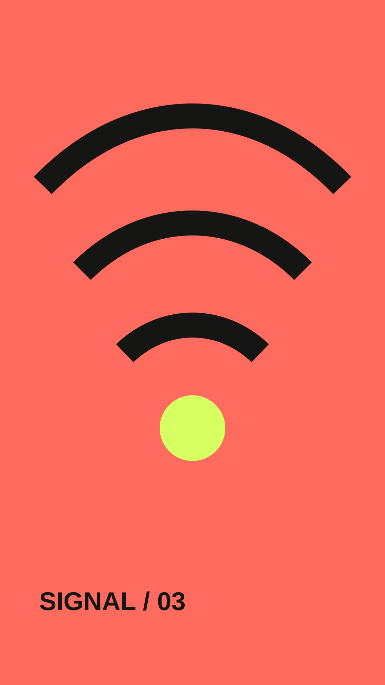
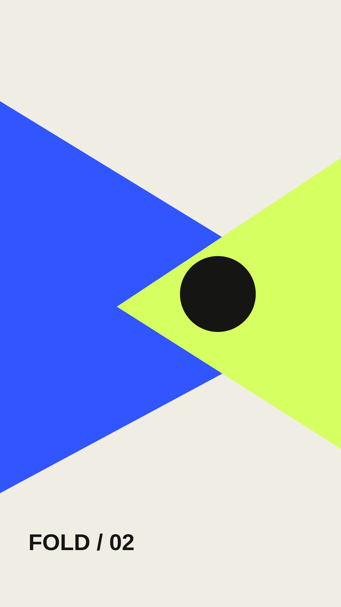
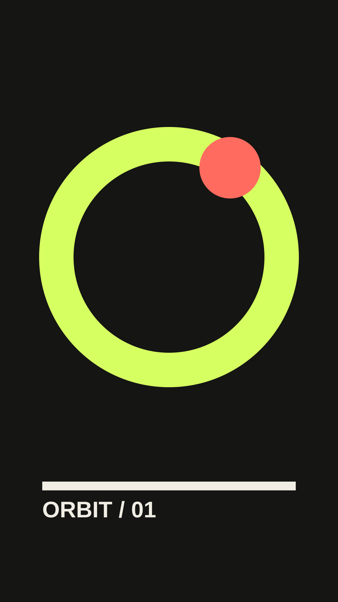
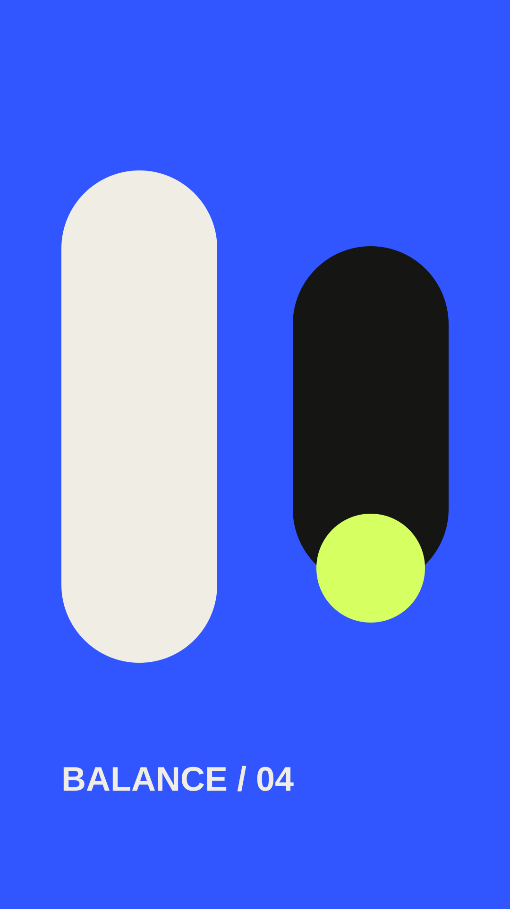
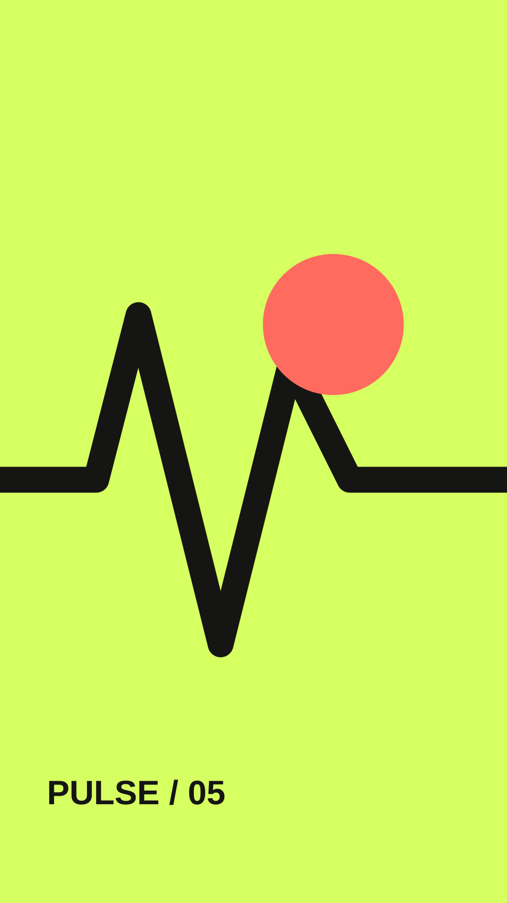
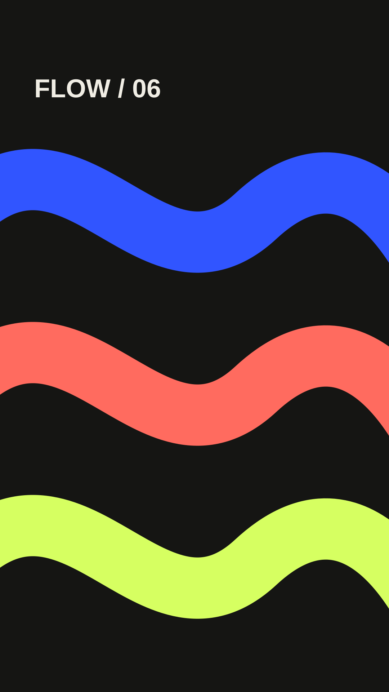
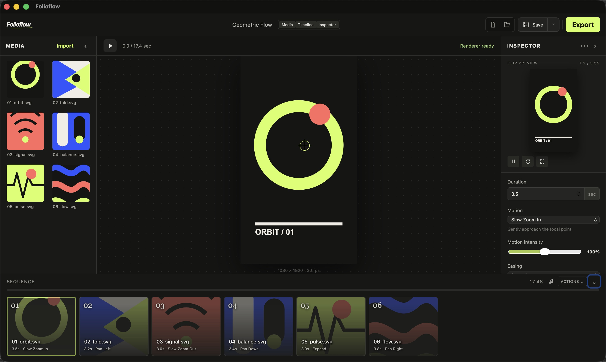

Bring in the work
Import images, see every source at a glance, and arrange the story as a visual sequence.
Desktop motion studio · macOS
Turn a collection of artwork into a composed vertical reel—shape every movement, transition, and beat without entering a crowded video editor.
Apple Silicon · Export engine included




EXPORT
FLOW
The workspace
Folioflow keeps artwork, composition, timing, and motion in one calm workspace. Select a clip and every relevant control is already within reach.

Import images, see every source at a glance, and arrange the story as a visual sequence.
Choose a motion style, set its intensity and focal point, then tune easing and transitions clip by clip.
Preview with music and render a social-ready 1080 × 1920 H.264 video with the included export engine.
Built for focus
Slow zooms, directional pans, controlled expansion, focal positioning, intensity, and easing—each clip gets its own behavior.
Isolate an image and inspect its movement without repeatedly playing the complete sequence.
The export engine travels with the app. Make the reel, choose a destination, and finish.
Add a soundtrack, trim it, set the level, and listen while the complete sequence plays.